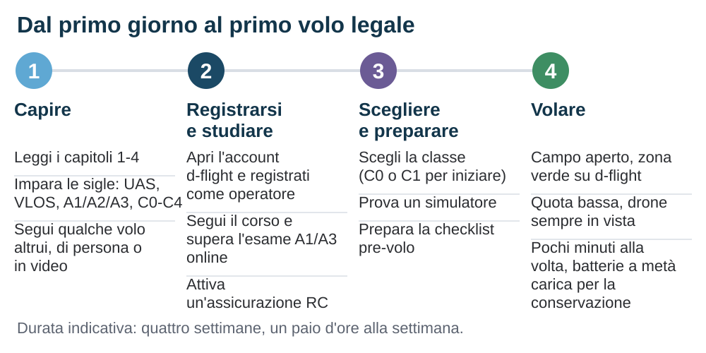

Percorso del neofita e appendici
Hai letto le regole e capito come funziona la macchina. Questo capitolo mette tutto in ordine di esecuzione: un percorso di esempio in quattro settimane, i criteri normativi per scegliere la classe del primo drone, e le appendici da tenere a portata di mano.
- Quattro settimane, un piano
- Scegliere la prima classe di drone
- Allenarsi senza rischi
- Glossario
- Acronimi
- Fonti ufficiali e link utili
Fonti normative verificate il 20 settembre 2026.
8.1 Quattro settimane, un piano
Il percorso che segue è un esempio, non un programma: presuppone un paio d'ore alla settimana e va allungato quanto serve. Distingui la lettura dallo studio: i capitoli da 1 a 4 si leggono in fretta, ma si assimilano in più sedute. L'ordine conta: capire l'operazione prima di scegliere il drone evita di comprare il mezzo sbagliato, e verificare le regole prima di volare evita di scoprire troppo tardi che quel volo non era ammesso.

- Settimana 1: capire l'operazione. Leggi i capitoli da 1 a 4 tenendo a fuoco una domanda: «in quale sottocategoria voglio volare, e con quali persone intorno?». Impara le sigle che tornano ovunque: UAS, VLOS, A1, A2, A3, C0-C4, MTOM. Se puoi, guarda un volo dal vivo: capisci cosa si vede da terra a 50 m.
- Settimana 2: ramo normativo e studio. Stabilisci su quale strada ti muovi, perché da lì dipendono sottocategorie e requisiti: prodotto con marcatura di classe, UAS senza marcatura ammesso dall'articolo 20, oppure costruzione privata. Poi studia il materiale gratuito dell'ENAC per l'attestato A1/A3: questa guida dà il contesto, l'esame segue il proprio syllabus. Verifica intanto quali coperture ti servono: le condizioni della polizza possono dipendere dal mezzo e dall'impiego.
- Settimana 3: scegliere il drone e preparare. Con le regole chiare, scegli la classe secondo i criteri della sezione 8.2. Nel frattempo prova un simulatore (sezione 8.3). Prepara la checklist pre-volo partendo da quella del capitolo 7. Studia la mappa di d-flight della tua zona e individua due o tre campi aperti, in area libera, dove fare i primi voli.
- Settimana 4: adempimenti e primo volo. Ora che sai quale drone userai, attiva prima di decollare quello che serve: registrazione come operatore UAS su d-flight quando è richiesta, attestato A1/A3, polizza (capitolo 5), numero di operatore applicato sul drone. Poi il primo volo, in campo aperto e con poco vento: verifica sul manuale cosa fa il drone se perde il comando radio, pianifica la quota di ritorno automatico al punto home (RTH) insieme agli ostacoli e ai limiti di altezza, controlla il fix GNSS, decolla a due metri e resta lì un minuto. Poi voli brevi e bassi, sempre in vista. Un amico che guarda il cielo con te aiuta, ma gli obblighi del pilota restano tuoi.
8.2 Scegliere la prima classe di drone
Questa guida non consiglia marche o modelli: il criterio con cui scegliere il primo drone non è commerciale ma normativo. La domanda è «in quale sottocategoria voglio volare e con quali persone intorno?», e da lì discende la classe di prodotto.
C0 Sotto i 250 g
- Sottocategoria A1: vicino alle persone, sorvolo ammesso (non assembramenti)
- Nessun attestato richiesto; per i primi voli conviene farlo comunque
- Registrazione dell'operatore se ha un sensore di dati personali, salvo conformità alla direttiva giocattoli
- Altezza raggiungibile limitata a 120 m sopra il punto di decollo
C1 Sotto i 900 g
- MTOM sotto i 900 g, oppure energia d'impatto sotto gli 80 J
- Sottocategoria A1: vicino alle persone, senza sorvolo intenzionale
- Attestato A1/A3 obbligatorio; registrazione dell'operatore
- Remote ID diretto e geo-awareness richiesti dalla classe
C2 Sotto i 4 kg
- Sottocategoria A2 con certificato di competenza A2, altrimenti A3
- 30 m dalle persone non coinvolte, riducibili fino a 5 m con modalità a bassa velocità attiva e valutazione della situazione
- La classe non esclude la città: in A2 si vola anche in area urbana, se tutte le condizioni sono rispettate
Le schede dicono dove puoi volare e con quali persone intorno, non quanto vola bene il drone: autonomia, tenuta al vento, camera e sensori variano da modello a modello dentro la stessa classe. Per la maggior parte dei lettori l'alternativa è tra C0 e C1, e la differenza sta in cosa ti è permesso fare: il C0 ammette il sorvolo di persone non coinvolte, il C1 no.
Cosa guardare, oltre alla classe
- La marcatura di classe deve essere presente sul prodotto e nella documentazione, non promessa da un aggiornamento futuro. Senza marcatura restano due strade distinte, l'articolo 20 e la costruzione privata (capitolo 4): un prodotto venduto oggi non ricade automaticamente nella prima, e il fabbricante può dichiarare la conformità in seguito.
- La MTOM dichiarata e la massa effettiva della configurazione con cui voli. La prima è il limite fissato dal fabbricante, carico utile compreso; la seconda la misuri con batteria, protezioni delle eliche e accessori. Confrontale entrambe con i limiti applicabili: un accessorio che porta il drone fuori dalla configurazione ammessa lo rende non conforme alla sua classe, non un legacy utilizzabile in A3.
- Sensori di ostacoli e tenuta della posizione senza GNSS (optical flow, sensori verso il basso): servono a bassa quota e vicino agli ostacoli, dove il margine di reazione è minimo.
- Comportamento alla perdita del collegamento: verifica sul manuale quale azione esegue il drone e se è configurabile. Il rientro automatico è una delle possibilità, non una garanzia: il failsafe può comandare atterraggio, mantenimento della posizione o altro.
- Aggiornamenti del database delle zone geografiche: senza aggiornamenti la geo-awareness perde valore.
- Disponibilità di eliche e batterie di ricambio: le eliche si rompono, le batterie invecchiano.
- Autonomia: il valore dichiarato è misurato in condizioni favorevoli. Parti dai limiti del manuale, riducili per vento, temperatura e peso e valuta la tratta di ritorno. Sottrarre un quarto è un'indicazione grossolana, non un criterio: un volo lontano controvento può richiedere di rientrare molto prima.
- Trasmissione video e portata: la portata dichiarata vale in condizioni ideali e spesso con potenze non ammesse in Europa (capitolo 3). In Open ti serve quella entro cui vedi il drone a occhio nudo.
La strada FPV
Se ti attira il volo in prima persona il percorso è diverso: si assemblano telaio, motori, ESC, controllore di volo (flight controller) e ricevitore, si configura il firmware, si vola con gli occhiali e un osservatore accanto. FPV descrive come guardi, non come comandi: in prima persona si vola anche in angle, horizon o mantenimento di posizione, e l'acro serve alle acrobazie senza autolivellamento. La regola di ingresso dipende dal ramo normativo: un quadricottero costruito privatamente vola in A1 solo se ha MTOM sotto i 250 g e velocità massima sotto i 19 m/s, altrimenti in A3, fino a meno di 25 kg. Montare un kit completo immesso sul mercato come unico prodotto pronto da montare non rientra invece nella definizione normativa di costruzione privata.
8.3 Allenarsi senza rischi
I simulatori di volo girano su un PC comune, accettano un radiocomando reale collegato via USB e riproducono con buona fedeltà la fisica di un multirotore: si sbaglia senza rompere niente. Per il volo stabilizzato bastano poche ore per automatizzare la relazione tra stick e movimento, soprattutto quando il drone è rivolto verso di te e i comandi sembrano invertiti. Per l'FPV acrobatico chi lo pratica consiglia venti o trenta ore prima di decollare con un drone vero: è una cautela raccomandata, non un requisito normativo. Conviene allenarsi con lo stesso radiocomando che userai, o con uno che abbia la stessa disposizione degli stick.
Sul campo i primi esercizi utili sono pochi e ripetitivi: hovering fermo a due metri per un minuto; quadrato a quota costante con il muso in avanti; lo stesso quadrato con il muso verso di te; salita e discesa verticale con arresto a una quota prefissata; atterraggio su un punto. Quando li esegui senza pensarci, sei pronto per usare la camera.
8.4 Glossario
- Aeromobile senza equipaggio UA
- Il drone in senso stretto: la macchina che vola. Con la stazione di controllo e il link forma il sistema UAS.
- Area a terra controllata
- Zona di terreno in cui l'operatore garantisce che non entrino persone non coinvolte durante il volo. Requisito degli scenari standard.
- Assembramento di persone
- Gruppo così fitto che le persone non possono allontanarsi liberamente. Il sorvolo è vietato in Open.
- Attestato A1/A3
- Titolo del pilota remoto ottenuto con corso ed esame online di 40 domande; vale 5 anni. «Patentino» è l'uso comune, non il nome ufficiale.
- Automatico, autonomo
- Un volo automatico esegue una sequenza programmata, come un rientro al punto home, e il pilota può intervenire. Un volo autonomo esclude l'intervento del pilota: in Open non è ammesso.
- Autorizzazione operativa
- Documento dell'autorità che consente un'operazione Specific alle condizioni descritte.
- C-rating
- Multiplo della capacità che indica la corrente massima erogabile: 1500 mAh a 20C significano 30 A.
- Certificato di competenza A2
- Titolo aggiuntivo per la sottocategoria A2: autoformazione pratica dichiarata più esame teorico di 30 domande. La regola europea ammette verifiche sorvegliate anche a distanza; la procedura ENAC richiede la sede dell'entità riconosciuta e indica un termine di 15 giorni rispetto al conseguimento dell'attestato A1/A3.
- Classe C0-C6
- Classe di prodotto definita dal Regolamento 2019/945, attestata dalla marcatura del costruttore. Determina le sottocategorie in cui il drone può volare.
- Controllore di volo (flight controller)
- Scheda con microcontrollore e sensori inerziali che stabilizza il drone e traduce i comandi in variazioni di spinta dei motori.
- d-flight
- Portale italiano per la registrazione degli operatori, il QR code e le zone geografiche. L'esame A1/A3 si sostiene invece sulla piattaforma dell'ENAC.
- Drone senza marcatura di classe legacy
- UAS immesso sul mercato senza marcatura di classe prima del 1º gennaio 2024: l'articolo 20 lo ammette in A1 sotto i 250 g, altrimenti solo in A3. Un prodotto venduto oggi non vi rientra automaticamente; la costruzione privata è un percorso distinto.
- Failsafe
- Comportamento automatico alla perdita del link radio o in altre condizioni critiche: rientro, atterraggio, mantenimento della posizione o altro, secondo firmware, configurazione e sensori. Verificalo sul manuale.
- Geo-awareness
- Funzione con cui il drone conosce le zone geografiche pubblicate e avverte il pilota prima di una violazione. Richiesta a C1, C2 e C3, non a C4; facoltativa su C5 e C6.
- Geofence, geo-caging
- Limite virtuale oltre il quale il drone non prosegue. Il geo-caging è il contenimento entro un volume programmato, richiesto alla C6: cosa diversa dalla terminazione del volo e dall'avviso geografico.
- Linea di vista VLOS
- Condizione in cui il pilota vede il drone a occhio nudo e ne controlla posizione e orientamento. Obbligatoria in Open.
- Massa massima al decollo MTOM
- Limite di massa al decollo fissato dal fabbricante o dal costruttore, carico utile compreso. Non coincide con la massa effettiva della configurazione con cui voli: confrontale entrambe con i limiti.
- Modalità a bassa velocità
- Funzione che limita la velocità al suolo: 3 m/s nella C2, dove consente in A2 di scendere a 5 m dalle persone non coinvolte, ma solo se attiva; 5 m/s nella C5, nei casi previsti.
- Operatore UAS
- Persona fisica o giuridica responsabile dell'operazione: si registra, assicura, garantisce la formazione del pilota.
- Osservatore
- Persona accanto al pilota che tiene il drone in vista e lo avverte dei pericoli; necessaria con occhiali FPV in Open.
- Persona non coinvolta
- Chi non partecipa all'operazione e non ne conosce le istruzioni di sicurezza; le distanze delle sottocategorie si misurano da queste persone. Avvisare qualcuno del decollo non lo rende coinvolto: servono consenso e istruzioni.
- Pilota remoto
- Chi comanda materialmente il volo e ne risponde per la condotta: quota, distanze, zone, precedenze.
- Remote ID
- Identificazione a distanza diretta: in volo il drone trasmette via Bluetooth o Wi-Fi registrazione dell'operatore, numero di serie, posizione, quota, velocità e posizione del pilota. Requisito da C1 a C3, C5 e C6.
- Ritorno automatico al punto home RTH
- Manovra automatica di rientro verso il punto di decollo, comandata dal pilota o dal failsafe. Solo se prevista, configurata e supportata dallo stato del sistema: non è garantita.
- SAIL
- Livello, da I a VI, che la SORA assegna a un'operazione Specific: determina la quantità di evidenze richieste.
- Scenario standard STS
- Operazione Specific già descritta dal regolamento, eseguibile con una dichiarazione e un drone C5 (STS-01) o C6 (STS-02).
- Sottocategoria A1, A2, A3
- Le tre suddivisioni della categoria operativa Open, che fissano la distanza dalle persone non coinvolte. Categoria operativa, sottocategoria e classe di prodotto sono piani distinti.
- Telemetria
- Dati di stato inviati dal drone alla stazione di controllo: tensione, posizione, quota, qualità del link.
- U-space
- Servizi digitali per la gestione del traffico dei droni in spazi aerei designati, definiti dal Regolamento 2021/664.
- Zona geografica UAS
- Porzione di spazio aereo in cui uno Stato vieta, limita, subordina ad autorizzazione o agevola il volo dei droni.
8.5 Acronimi e sigle
Le sigle e gli acronimi usati in questa guida, in ordine alfabetico, ciascuno con l'acronimo esteso, la traduzione italiana e una spiegazione. Nella versione a schermo le sigle nel testo sono cliccabili e aprono la stessa scheda; qui la mappa completa, per chi legge su carta. Le sigle nate in italiano (ENAC, SAPR, SPID…) non si traducono: al posto della traduzione trovi l'indicazione «sigla italiana».
| Sigla | Acronimo esteso | Traduzione | Spiegazione |
|---|---|---|---|
| AGL | Above Ground Level | Quota rispetto al suolo | La quota misurata verticalmente rispetto al punto del terreno sotto il drone. Il limite dei 120 m della categoria Open si misura invece dal punto più vicino della superficie terrestre: sopra un pendio o una cresta la differenza conta. |
| AIP | Aeronautical Information Publication | Pubblicazione di informazioni aeronautiche | La raccolta ufficiale con cui ogni Stato pubblica le informazioni stabili del proprio spazio aereo: aeroporti, zone, procedure. In Italia è curata dall'ENAV e si legge insieme ai NOTAM per le variazioni temporanee. |
| AMC | Acceptable Means of Compliance | Mezzi accettabili di rispondenza | Documenti con cui l'EASA descrive uno dei modi accettati per soddisfare un requisito del regolamento. Non sono l'unica strada: chi sceglie diversamente deve dimostrare la rispondenza. Hanno valore diverso dai GM. |
| ANSV | Agenzia Nazionale per la Sicurezza del Volo | Sigla italiana (non si traduce) | L'autorità italiana che indaga gli incidenti aeronautici, droni inclusi. Un incidente o un inconveniente grave va segnalato immediatamente e comunque entro 60 minuti dalla conoscenza dell'evento, anche senza feriti né danni. |
| APR | Aeromobile a Pilotaggio Remoto | Sigla italiana (non si traduce) | Il termine dei regolamenti italiani anteriori al 2021 per il singolo aeromobile. Sopravvive in testi e siti non aggiornati: se lo incontri, controlla la data del documento prima di fidarti del contenuto. |
| ATM | Air Traffic Management | Gestione del traffico aereo | In questa guida compare nel codice della circolare ENAC ATM-09A, che disciplina come si istituiscono e si pubblicano le zone geografiche UAS italiane. |
| ATZ | Aerodrome Traffic Zone | Zona di traffico di aerodromo | Spazio aereo attorno a un aeroporto, di norma riservato al suo traffico. In Italia le ATZ sono recepite come zone geografiche UAS: il volo in Open dentro una ATZ segue la scheda della zona sulla mappa d-flight. |
| BVLOS | Beyond Visual Line Of Sight | Volo oltre la linea di vista | Operare con il drone fuori dalla vista del pilota. La categoria Open ordinaria lo esclude: serve la categoria Specific, con mitigazioni del rischio adeguate all'operazione. |
| CE | Conformité Européenne | Conformità europea | La marcatura con cui il fabbricante dichiara che un prodotto rispetta la legislazione europea applicabile: per la radio, la direttiva RED dimostrata con le norme armonizzate ETSI. È distinta dalla marcatura di classe C0-C6, che si aggiunge per i requisiti UAS. |
| CTR | Control Zone | Zona di controllo | Spazio aereo controllato a servizio di uno o più aeroporti. Anche le CTR italiane compaiono come zone geografiche UAS: la regola valida è quella scritta nella scheda della zona, non il colore sulla mappa. |
| EASA | European Union Aviation Safety Agency | Agenzia dell'Unione europea per la sicurezza aerea | L'agenzia che assiste la Commissione nella normativa aeronautica e pubblica i materiali tecnici, droni inclusi: Easy Access Rules, scenari standard, PDRA. Non è l'autorità nazionale: in Italia chi comanda è l'ENAC. |
| ECCAIRS | European Co-ordination Centre for Accident and Incident Reporting Systems | Centro europeo di coordinamento per la segnalazione di incidenti e inconvenienti | Il sistema informativo europeo in cui confluiscono le segnalazioni obbligatorie di eventi. In Italia gli eventi con droni si segnalano all'ENAC via ECCAIRS 2 entro 72 ore. |
| EIRP | Equivalent Isotropically Radiated Power | Potenza irradiata equivalente (riferita all'antenna isotropa) | La grandezza con cui si esprimono i limiti di potenza radio: la potenza irradiata nella direzione di massimo guadagno, pari alla potenza del trasmettitore sommata al guadagno dell'antenna. Le bande usate dai droni hanno limiti EIRP distinti. |
| ENAC | Ente Nazionale per l'Aviazione Civile | Sigla italiana (non si traduce) | L'autorità italiana dell'aviazione civile. Emette il Regolamento UAS-IT e le circolari, gestisce la formazione e gli esami dei piloti (attestato A1/A3, esame A2) e definisce le zone geografiche pubblicate sulla mappa d-flight. |
| ENAV | Ente Nazionale per l'Assistenza al Volo | Sigla italiana (non si traduce) | Il fornitore italiano dei servizi di navigazione aerea: gestisce il controllo negli spazi aerei controllati e pubblica AIP e NOTAM dello spazio aereo italiano. |
| ESC | Electronic Speed Controller | Regolatore elettronico di velocità | L'elettronica di potenza che riceve il comando dal controllore di volo e pilota il motore brushless con una traccia trifase a velocità variabile. Su un quadricottero ce n'è uno per motore, oppure una scheda unica a quattro. |
| ETSI | European Telecommunications Standards Institute | Istituto europeo per gli standard nelle telecomunicazioni | L'organismo europeo che pubblica le norme armonizzate (EN 300 328, EN 300 220, EN 300 440…) con cui un apparato radio dimostra la conformità alla direttiva RED. |
| FCC | Federal Communications Commission | Commissione federale per le comunicazioni (Stati Uniti) | L'autorità radio statunitense. Le portate dichiarate dai costruttori si riferiscono spesso ai limiti di potenza FCC, più generosi di quelli europei: in Europa i valori da aspettarsi sono quelli misurati in marcatura CE. |
| FPV | First Person View | Visione in prima persona | Pilotare guardando l'immagine della videocamera di bordo, con occhiali o monitor. In Open serve un osservatore che tenga il drone a vista accanto al pilota. Descrive come guardi, non come comandi. |
| GCS | Ground Control Station | Stazione di controllo a terra | L'insieme di radiocomando, app o software con cui il pilota comanda il drone e riceve telemetria e video. È una delle tre parti del sistema UAS, insieme all'aeromobile e al collegamento. |
| GDPR | General Data Protection Regulation | Regolamento generale sulla protezione dei dati | Il regolamento (UE) 2016/679 sui dati personali. Un drone con videocamera li tratta: ne conta per la registrazione dell'operatore, per le informative verso le persone riprese e per le misure da adottare. |
| GLONASS | Global'naja Navigacionnaja Sputnikovaja Sistema | Sistema globale di navigazione satellitare russo | Una delle costellazioni GNSS. Un ricevitore multi-costellazione ne usa diverse insieme (GPS, Galileo, BeiDou) per fix più rapidi e robusti. |
| GNSS | Global Navigation Satellite System | Sistema globale di navigazione satellitare | Il posizionamento satellitare nel suo complesso: costellazioni, ricevitore e correzioni. È la base delle modalità che tengono la posizione e del ritorno al punto home: senza un fix valido il controllore di volo rifiuta di armarle. |
| GPS | Global Positioning System | Sistema di posizionamento globale | La costellazione statunitense, la prima entrata in servizio. Nel linguaggio comune è diventato sinonimo di posizionamento satellitare in generale, ma è solo una delle costellazioni GNSS. |
| IMU | Inertial Measurement Unit | Unità di misura inerziale | L'insieme di giroscopi e accelerometri, di norma a tre assi, con cui il controllore di volo misura assetto e accelerazioni. Le sue letture, rumorose e derivanti, vengono fuse con gli altri sensori dallo stimatore. |
| JARUS | Joint Authorities for Rulemaking on Unmanned Systems | Autorità congiunte per la normazione sui sistemi senza equipaggio | Il gruppo di autorità nazionali di sicurezza aerea, ENAC compreso, che ha sviluppato la metodologia SORA poi ripresa dal regolamento europeo. |
| KV | Motor velocity constant | Costante di velocità del motore | I giri al minuto per volt a vuoto: un motore da 1750 KV a 22,2 V nominali gira intorno ai 39.000 giri/min. KV alte per eliche piccole e macchine agili; KV basse per più coppia e carichi. |
| Li-ion | Lithium-Ion | Ioni di litio | Le batterie agli ioni di litio: alta densità di energia ma correnti di scarica generalmente più basse delle LiPo. Scelte dove conta l'autonomia più della potenza istantanea. |
| LiHV | Lithium High Voltage | Litio ad alta tensione | Variante delle batterie al litio-polimero caricate a tensione più alta (4,35 V per cella contro 4,20): più energia nello stesso pacco, ma servono caricatori e impostazioni dedicati. |
| LiPo | Lithium Polymer | Litio-polimero | La chimica tipica delle batterie dei droni: celle da 3,7 V nominali, alte correnti di scarica, pacchi in serie e in parallelo (2S, 4S…). Esigenti su carica e stoccaggio: un pacco gonfio o danneggiato va messo in sicurezza. |
| LUC | Light UAS Operator Certificate | Certificato di operatore UAS leggero | Il certificato con cui un operatore ottiene il privilegio di autorizzare da sé le proprie operazioni in categoria Specific, entro i limiti e le condizioni del certificato, senza passare ogni volta dall'autorità. |
| MAVLink | Micro Air Vehicle Link | Collegamento per micro aeromobili | Il protocollo aperto di scambio messaggi fra controllore di volo e stazione a terra, usato da ArduPilot e PX4: telemetria, stato del sistema e comandi di missione. |
| MEMS | Micro Electro-Mechanical Systems | Sistemi elettromeccanici in microscala | La tecnologia che realizza parti meccaniche ed elettroniche sullo stesso chip: è quella dei giroscopi e degli accelerometri degli IMU moderni. |
| MTOM | Maximum Take-Off Mass | Massa massima al decollo | Il limite di massa al decollo fissato dal fabbricante, carico utile compreso. Le soglie normative (250 g, 900 g, 4 kg, 25 kg) si applicano a questa massa; la massa effettiva della configurazione con cui voli va comunque controllata. |
| NAN | Neighbor Awareness Networking | Rete di consapevolezza tra vicini (Wi-Fi Aware) | Uno dei quattro trasporti previsti dallo standard europeo EN 4709-002 per il Remote ID diretto, basato su Wi-Fi. Non tutti i telefoni lo supportano: la ricezione dipende da chipset, sistema operativo e permessi concessi all'app. |
| NOTAM | Notice to Airmen | Avvisi agli aviatori | Le informazioni operative temporanee sullo spazio aereo: chiusure, attività, limiti. Si consultano insieme alla mappa d-flight prima del volo; in Italia sono pubblicati dall'ENAV. |
| PDRA | Pre-Defined Risk Assessment | Valutazione del rischio predefinita | Analisi del rischio già svolta e pubblicata dall'EASA per operazioni Specific ricorrenti. Operare dentro i confini di un PDRA evita di rifare la SORA: basta una dichiarazione conforme allo scenario. |
| PID | Proportional, Integral, Derivative | Proporzionale, Integrale, Derivativo | La struttura classica degli anelli di controllo d'assetto: correzione proporzionale all'errore, al suo accumulo (integrale) e alla sua tendenza (derivativa). Nei controllori di volo lavora in anelli in cascata, dal più interno in fuori. |
| QR | Quick Response | Risposta rapida | Il codice a matrice bidimensionale leggibile con la fotocamera dello smartphone. In Italia il numero d'operatore rilasciato da d-flight si applica sul drone come etichetta leggibile o QR code. |
| RED | Radio Equipment Directive | Direttiva sulle apparecchiature radio | La direttiva 2014/53/UE che regola ogni apparato radio immesso sul mercato europeo, radiocomandi e droni compresi: uso efficiente dello spettro, compatibilità elettromagnetica, sicurezza. Si dimostra con le norme armonizzate ETSI e la marcatura CE. |
| RPAS | Remotely Piloted Aircraft System | Sistema aeromobile a pilotaggio remoto | Il termine preferito dai documenti dell'aviazione civile internazionale: sottolinea che un pilota remoto c'è ed è responsabile, ed esclude i sistemi completamente autonomi. |
| RSSI | Received Signal Strength Indicator | Indicatore dell'intensità del segnale ricevuto | La misura della potenza del segnale radio ricevuto, in unità arbitrarie o in dBm. Nel radiocomando è l'indicatore più grezzo della qualità del link: va letto insieme alle altre misure, non da solo. |
| RTH | Return To Home | Ritorno al punto home | La manovra automatica di rientro al punto di decollo registrato al momento dell'armamento, comandata dal pilota o dal failsafe. Non è garantita: dipende da fix GNSS, configurazione, batteria residua e ostacoli lungo la rotta. |
| RTK | Real-Time Kinematic | Cinematica in tempo reale | La correzione GNSS differenziale in tempo reale che porta l'incertezza della posizione da metri a centimetri, usando una base fissa o di rete. Serve ai rilievi metrici, non al volo ordinario. |
| SAIL | Specific Assurance and Integrity Level | Livello di garanzia e integrità (categoria Specific) | Il livello, da I a VI, che la SORA assegna a un'operazione in base al rischio residuo: più è alto, più numerose e robuste devono essere le evidenze da fornire. |
| SAPR | Sistema Aeromobile a Pilotaggio Remoto | Sigla italiana (non si traduce) | L'equivalente italiano di UAS nei regolamenti anteriori al 2021. Come APR, incontrarlo in un documento è un indizio di contenuti datati da verificare. |
| SORA | Specific Operations Risk Assessment | Valutazione del rischio di operazioni Specific | La metodologia sviluppata da JARUS e ripresa dal regolamento europeo per analizzare un'operazione fuori dalla Open: pericoli a terra e in volo, mitigazioni, rischio residuo accettabile. Il risultato determina requisiti e livello SAIL. |
| SPID | Sistema Pubblico di Identità Digitale | Sigla italiana (non si traduce) | Le credenziali di identità digitale dei servizi pubblici italiani: servono, per esempio, per registrarsi come operatore UAS su d-flight. |
| SRD | Short Range Devices | Apparati a corto raggio | La famiglia degli apparati radio a bassa potenza che condividono bande senza licenza, come gli 868 MHz europei: limiti EIRP stretti e obbligo di non disturbare chi condivide la banda. |
| STS | Standard Scenario | Scenario standard | Le operazioni Specific già descritte dal regolamento (STS-01 e STS-02): si eseguono con una dichiarazione all'autorità e un drone di classe C5 o C6, senza una valutazione del rischio propria. |
| UA | Unmanned Aircraft | Aeromobile senza equipaggio | Il drone in senso stretto: la macchina che vola. È il termine dei regolamenti europei per l'aeromobile da solo; con la stazione di controllo e il collegamento forma l'UAS. |
| UAS | Unmanned Aircraft System | Sistema aeromobile senza equipaggio | L'oggetto delle regole europee: aeromobile (UA), stazione di controllo a terra e collegamento di comando e controllo, con le relative apparecchiature. Gli obblighi ricadono su operatore e pilota remoto. |
| USB | Universal Serial Bus | Bus seriale universale | Lo standard di collegamento con cui il radiocomando si collega al computer: configurazioni, aggiornamenti firmware e simulatori di volo. |
| VLOS | Visual Line Of Sight | Linea di vista (volo a vista) | La condizione in cui il pilota vede il drone a occhio nudo, senza auspli ottici, e ne controlla posizione e orientamento. È la regola ordinaria della categoria Open; con gli occhiali FPV serve un osservatore. |
| VTX | Video Transmitter | Trasmettitore video | Il modulo di bordo che trasmette alla stazione a terra il video della camera, analogico o digitale, sulle bande e con le potenze ammesse in Europa. |
8.6 Fonti ufficiali e link utili
Europa
- EASA, portale droni e mobilità aerea: easa.europa.eu/en/domains/drones-air-mobility
- EASA, Easy Access Rules for Unmanned Aircraft Systems, testo consolidato: easa.europa.eu, Easy Access Rules UAS
- Regolamento di esecuzione (UE) 2019/947: eur-lex.europa.eu/eli/reg_impl/2019/947
- Regolamento delegato (UE) 2019/945: eur-lex.europa.eu/eli/reg_del/2019/945
- Regolamento di esecuzione (UE) 2021/664 sullo U-space: eur-lex.europa.eu/eli/reg_impl/2021/664
- JARUS, metodologia SORA: jarus-rpas.org
Italia
- ENAC, sezione droni: Regolamento UAS-IT, circolari, FAQ: enac.gov.it/sicurezza-aerea/droni
- d-flight, registrazione operatori, QR code, mappa delle zone geografiche: d-flight.it
- ENAC, come si diventa pilota UAS (attestato A1/A3 ed esame A2): enac.gov.it/sicurezza-aerea/droni/piloti-uas
- ENAV, informazioni aeronautiche (AIP Italia) e NOTAM: enav.it
- Garante per la protezione dei dati personali: garanteprivacy.it
- ANSV, Agenzia nazionale per la sicurezza del volo: ansv.it
Tecnica e radio
- ETSI, norme armonizzate per apparati a corto raggio e WLAN (EN 300 328, EN 300 220, EN 300 440, EN 301 893): etsi.org
- Direttiva 2014/53/UE (RED) sulle apparecchiature radio: eur-lex.europa.eu/eli/dir/2014/53
- Documentazione dei firmware aperti: Betaflight betaflight.com, ArduPilot ardupilot.org, PX4 px4.io, ExpressLRS expresslrs.org, MAVLink mavlink.io
8.7 Crediti delle fotografie
Tutte le fotografie provengono da Wikimedia Commons e sono riprodotte alle condizioni della rispettiva licenza. Le didascalie dei capitoli portano i collegamenti all'opera e alla licenza; qui sotto gli stessi riferimenti sono scritti per esteso, così da restare utilizzabili sulla versione stampata. Il numero iniziale è quello del file in src/img/foto/.
- 01 quadricottero consumer in volo — Josh Sorenson, «Quadcopter camera drone in flight», licenza CC0.
Opera: https://commons.wikimedia.org/wiki/File:Quadcopter_camera_drone_in_flight.jpg
Licenza: http://creativecommons.org/publicdomain/zero/1.0/deed.en - 02 drone ad ala fissa (mapping/professionale) in volo o al decollo — Bureau of Land Management Oregon and Washington, «USGS Team Flies Drones for Oregon BLM Forestry Research (14778619794)», licenza pubblico dominio.
Opera: https://commons.wikimedia.org/wiki/File:USGS_Team_Flies_Drones_for_Oregon_BLM_Forestry_Research_(14778619794).jpg
Licenza: https://commons.wikimedia.org/wiki/Commons:Public_domain - 03 quadricottero fpv da freestyle/racing — Commanderbryce, «Racing Drone», licenza CC BY-SA 4.0.
Opera: https://commons.wikimedia.org/wiki/File:Racing_Drone.jpg
Licenza: https://creativecommons.org/licenses/by-sa/4.0 - 04 radiocomando per droni tenuto in mano — Shixart1985, «Person controls a drone with a remote in an outdoor setting undefined», licenza CC BY 2.0.
Opera: https://commons.wikimedia.org/wiki/File:Person_controls_a_drone_with_a_remote_in_an_outdoor_setting_undefined.jpg
Licenza: https://creativecommons.org/licenses/by/2.0 - 05 persona con occhiali fpv indossati — Mr.Oizo FPV, «Fpv Pilot», licenza CC BY-SA 4.0.
Opera: https://commons.wikimedia.org/wiki/File:Fpv_Pilot.jpg
Licenza: https://creativecommons.org/licenses/by-sa/4.0 - 06 pacco batteria lipo con connettori ed etichetta leggibile — RC Lipo battery, «AGAC5200 50C 2S2P», licenza CC BY-SA 3.0.
Opera: https://commons.wikimedia.org/wiki/File:AGAC5200_50C_2S2P.jpg
Licenza: https://creativecommons.org/licenses/by-sa/3.0 - 07 scheda flight controller/esc in primo piano — Ryan Decker, «Quadcopter Bottom Removed», licenza CC BY-SA 3.0. Ritagliata.
Opera: https://commons.wikimedia.org/wiki/File:Quadcopter_Bottom_Removed.jpg
Licenza: https://creativecommons.org/licenses/by-sa/3.0 - 08 motore brushless con elica montata — Ali.yusuf7, «Propeller of a Quadcopter - Top view», licenza CC BY-SA 4.0.
Opera: https://commons.wikimedia.org/wiki/File:Propeller_of_a_Quadcopter_-_Top_view.JPG
Licenza: https://creativecommons.org/licenses/by-sa/4.0 - 09 cartello/segnale di divieto di volo per droni (no drone zone) — James McNellis, «No Drone Zone (32364808291)», licenza CC BY 2.0.
Opera: https://commons.wikimedia.org/wiki/File:No_Drone_Zone_(32364808291).jpg
Licenza: https://creativecommons.org/licenses/by/2.0 - 10 drone multirotore professionale grande (esacottero) con payload — Matti Blume, «Tarot, AERO 2025, Friedrichshafen (P1046556)», licenza CC BY-SA 4.0. Ritagliata.
Opera: https://commons.wikimedia.org/wiki/File:Tarot,_AERO_2025,_Friedrichshafen_(P1046556).jpg
Licenza: https://creativecommons.org/licenses/by-sa/4.0 - 11 torre di controllo di un aeroporto vista da terra — Calistemon, «Jandakot Airport Air Traffic Control Tower, August 2023 01», licenza CC BY-SA 4.0.
Opera: https://commons.wikimedia.org/wiki/File:Jandakot_Airport_Air_Traffic_Control_Tower,_August_2023_01.jpg
Licenza: https://creativecommons.org/licenses/by-sa/4.0 - 12 pilota che fa volare un drone in campagna aperta — Bureau of Land Management Oregon and Washington, «USGS Team Flies Drones for Oregon BLM Forestry Research (14594340998)», licenza pubblico dominio.
Opera: https://commons.wikimedia.org/wiki/File:USGS_Team_Flies_Drones_for_Oregon_BLM_Forestry_Research_(14594340998).jpg
Licenza: https://commons.wikimedia.org/wiki/Commons:Public_domain - 13 drone usato in agricoltura (spargimento su coltivazione) — Christopher Hedreyd (PIA 4A CALABARZON), «IRRI BBM rice drone demo 2», licenza pubblico dominio.
Opera: https://commons.wikimedia.org/wiki/File:IRRI_BBM_rice_drone_demo_2.jpg
Licenza: https://commons.wikimedia.org/wiki/Commons:Public_domain - 14 paesaggio ripreso dall'alto da un drone (copertina) — John Fielding, «Burnham Overy Staithe aerial image - Flickr - John D Fielding», licenza CC BY 2.0.
Opera: https://commons.wikimedia.org/wiki/File:Burnham_Overy_Staithe_aerial_image_-_Flickr_-_John_D_Fielding.jpg
Licenza: https://creativecommons.org/licenses/by/2.0
Dove una fotografia è stata ritagliata, la modifica è indicata sia qui sia nella didascalia, come richiesto dalle licenze Creative Commons con obbligo di attribuzione. Questo elenco non è una verifica della titolarità dei diritti di ogni singola immagine: riporta quanto dichiarato sulla pagina dell'opera al 20 settembre 2026.
Edizione del 20 settembre 2026; revisione dei riferimenti normativi e verifica dei collegamenti alla stessa data. Un collegamento raggiungibile non garantisce un contenuto aggiornato: prima di affidarti a un valore di questa guida (tariffe, scadenze, edizioni dei regolamenti) apri la fonte indicata e controllane versione e data.